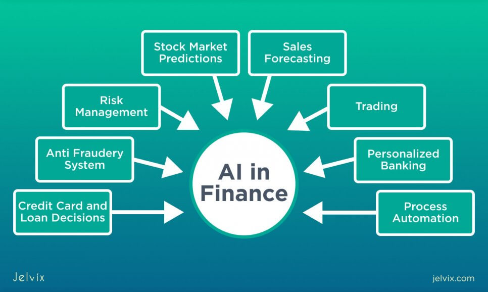

Artificial Intelligence
Artificial Intelligence (AI) is the simulation of human intelligence in machines that are programmed to think and learn like humans. AI can be classified into two categories: narrow AI, which is designed to perform a narrow task, and general AI, which has the ability to perform any intellectual task that a human can do.

AI applications include machine learning, natural language processing, robotics, and more. These technologies are used in a variety of fields, such as healthcare, finance, education, and transportation.

AI has the potential to transform our lives in many ways, from improving medical diagnoses to automating mundane tasks. However, it also raises ethical and societal questions that need to be addressed.
To learn more about AI, you can visit the Wikipedia page on Artificial Intelligence.
History of Artificial Intelligence
The concept of artificial intelligence dates back to ancient history, with myths, stories, and rumors of mechanical beings endowed with intelligence or consciousness by master craftsmen. Modern AI began with the development of electronic computers in the 1940s and the early pioneers, such as Alan Turing and John von Neumann.

In 1956, the term "Artificial Intelligence" was coined by John McCarthy at the Dartmouth Conference, where the field of AI research was born. Early AI research focused on problem-solving and symbolic methods. During the 1960s and 1970s, AI achieved several milestones, including the creation of the first AI programs and the development of expert systems.
The field experienced several cycles of optimism, followed by periods of disappointment and reduced funding, known as "AI winters." However, advances in computing power, the availability of large datasets, and improved algorithms have led to significant breakthroughs in AI in recent years.
Applications of Artificial Intelligence
AI has a wide range of applications across various industries. In healthcare, AI is used for diagnosing diseases, personalizing treatment plans, and predicting patient outcomes. For example, machine learning algorithms can analyze medical images to detect tumors or other abnormalities with high accuracy.
In finance, AI is used for fraud detection, algorithmic trading, and risk management. AI systems can analyze large volumes of financial data to identify patterns and trends, helping financial institutions make better decisions and improve customer service.
In education, AI-powered tools provide personalized learning experiences, automate administrative tasks, and offer intelligent tutoring systems. These applications help educators tailor instruction to individual student needs and improve educational outcomes.
AI is also transforming the transportation industry, with the development of autonomous vehicles and smart traffic management systems. Self-driving cars use AI to navigate, avoid obstacles, and make decisions in real-time, while smart traffic systems optimize traffic flow and reduce congestion.

Ethical Considerations in AI
As AI continues to advance, it raises several ethical and societal questions. One of the primary concerns is the impact of AI on employment. While AI has the potential to create new job opportunities, it may also lead to the displacement of workers in certain industries.

Another concern is the potential for bias in AI algorithms. AI systems are trained on large datasets, and if these datasets contain biased information, the resulting AI models may also exhibit bias. This can lead to unfair treatment and discrimination in areas such as hiring, lending, and law enforcement.
Privacy is another critical issue, as AI systems often require access to large amounts of personal data to function effectively. Ensuring that AI systems are designed and used in a way that respects individuals' privacy rights is essential.
Finally, the development of AI raises questions about accountability and transparency. As AI systems become more complex and autonomous, it can be challenging to understand how they make decisions. Ensuring that AI systems are transparent and that their creators and users are held accountable for their actions is crucial.
The Future of Artificial Intelligence
The future of AI is full of potential and possibilities. Researchers are working on developing more advanced AI systems that can understand and interact with the world in more sophisticated ways. This includes improving natural language processing, enhancing computer vision, and developing AI that can learn and adapt in real-time.

One exciting area of research is the development of artificial general intelligence (AGI), which aims to create AI systems that can perform any intellectual task that a human can do. While AGI is still a long way off, achieving it could have profound implications for society.
Another area of focus is the integration of AI with other emerging technologies, such as the Internet of Things (IoT) and blockchain. This could lead to new applications and innovations that leverage the strengths of multiple technologies.
As AI continues to evolve, it will be essential to address the ethical, legal, and societal challenges it presents. By doing so, we can ensure that AI is developed and used in a way that benefits all of humanity.
For more information on the future trends in AI, you can read articles and research papers from leading AI researchers and institutions. The AI Trends website is a great resource to stay updated on the latest developments in the field.